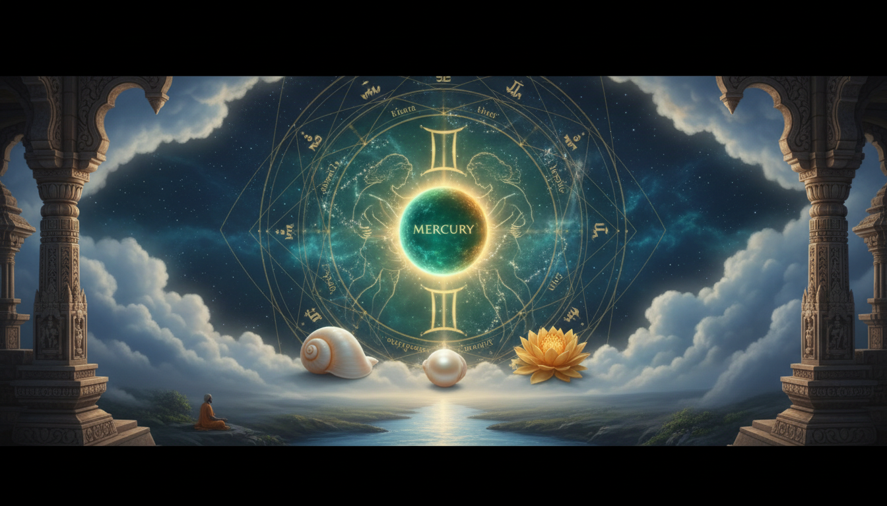

1. प्रस्तावना: हमारे जीवन में 'बुध' और 'वाणी' का महत्व
वैदिक वांग्मय में बुद्धि के अधिष्ठाता 'बुध' और अभिव्यक्ति की प्राणशक्ति 'वाणी' (वाक्) को मानवीय चेतना का मेरुदंड माना गया है। ऋग्वेद के ऋषि कहते हैं कि वाणी केवल ध्वनि का स्पंदन नहीं, बल्कि उस परब्रह्म का स्थूल प्रकटीकरण है। जहाँ बुद्धि सत्य का अनुशीलन करती है, वहीं वाणी उस सत्य को साकार रूप प्रदान करती है। यह लेख ज्योतिषीय विश्लेषण (Mercury Analysis) और 'वाक् दर्शन' (Philosophy of Vak) के उस रहस्यमयी संगम की व्याख्या करता है, जहाँ एक व्यक्ति की कुंडली के ग्रह और उसके अंतर्मन की ध्वनियाँ एक सूत्र में बंधती हैं।

—
2. कुंडली में बुध: एक ज्योतिषीय अनुशीलन (केस स्टडी)
वैदिक ज्योतिष के सिद्धांतों के आलोक में जब हम 'InvestigatorDry3683' की कुंडली का विश्लेषण करते हैं, तो बुध की स्थिति अत्यंत विशिष्ट परिलक्षित होती है। यहाँ बुध न केवल एक ग्रह है, बल्कि जातक का आत्मकारक (Atmakaraka) है, जो 28 डिग्री पर स्थित होकर आत्मा के प्रधान लक्ष्य और संघर्ष को दर्शाता है।
ज्योतिषीय विन्यास और प्रभाव: जातक की कुंडली में बुध चतुर्थ (सुख और मानसिक शांति) तथा सप्तम (साझेदारी और वैवाहिक जीवन) भाव का स्वामी होकर अष्टम भाव (परिवर्तन और गुप्त विद्या) में तुला राशि में स्थित है। तुला राशि में बुध का अधिपति शुक्र है, किंतु वहाँ सूर्य 'नीच' का होकर बुध को 'अस्त' (Combust) कर रहा है। साथ ही केतु की युति बुध पर केतु के 'शिखी' (अमूर्त) प्रभाव को बढ़ा देती है, जिससे जातक को सामाजिक संवाद में 'अंडर-एप्रिसिएशन' (अल्प-मूल्यांकन) और पृथकता का अनुभव होता है।
बुध के लक्षणों का तुलनात्मक विवरण:
| सकारात्मक लक्षण (शुभ प्रभाव) | नकारात्मक लक्षण (चुनौतीपूर्ण प्रभाव) |
|---|---|
| विश्लेषणात्मक प्रखरता: डेटा और सूचनाओं के प्रबंधन में विशेष निपुणता। | त्वचा विकार: शुष्क त्वचा और मुँहासों (Acne) की निरंतर समस्या। |
| तीव्र अधिगम (Fast Learner): नवीन विषयों और वाद्ययंत्रों को शीघ्र सीखने की क्षमता। | स्नायु दुर्बलता: तंत्रिका तंत्र की संवेदनशीलता के कारण हाथों का कांपना (Shaky hands)। |
| लेखन सामर्थ्य: कविता और सामाजिक विषयों पर प्रभावी लेखन (Vaikhari से पूर्व Madhyama का प्रबल होना)। | संवाद अवरोध: मस्तिष्क में विचार होने पर भी मुख से व्यक्त करने में असमर्थता। |
| युवा व्यक्तित्व: अपनी वास्तविक आयु से सदैव कम दिखाई देना। | लिपि दोष: 15 वर्ष के बालक जैसी अस्पष्ट और खराब लिखावट (Handwriting)। |
| गणितीय समझ: तर्क की समझ श्रेष्ठ, किंतु गणनाओं और परीक्षा परिणाम में बाधा। | गणित के प्रति अरुचि: सैद्धांतिक समझ के बावजूद गणितीय गणनाओं से विरक्ति। |
अष्टम भाव का यह बुध जातक को रहस्यमयी ज्ञान (Occult Knowledge) की ओर प्रेरित करता है, किंतु सूर्य-केतु की युति के कारण वाणी का प्रकटीकरण बाधित होता है।
—
3. वाणी के चार स्तर: परा से वैखरी तक की सूक्ष्म यात्रा
वैदिक दर्शन और व्याकरण शास्त्र में वाणी के चार चरणों का वर्णन है। जहाँ महान वैयाकरण भर्तृहरि ने वाणी के तीन मुख्य स्तरों (पश्यंती, मध्यमा, वैखरी) पर बल दिया, वहीं आचार्य अभिनवगुप्त (कश्मीर शैव दर्शन) ने इसके चतुर्थ और सर्वोच्च स्तर 'परा' को प्रतिष्ठित किया।
- परा (Para): यह वाणी का मूल स्रोत है—शुद्ध इच्छा शक्ति (Iccha Shakti)। यह चेतना का वह स्तर है जहाँ विचार अभी उत्पन्न भी नहीं हुआ है; यह केवल एक स्पंदन है।
- पश्यंती (Pashyanti): इसे 'दृश्य' वाणी कहा जाता है। यहाँ विचार एक बीज के रूप में होता है। भर्तृहरि इसे 'मयूर-अण्ड-रस' (Mayūrāṇḍa-rasa) के रूप में समझाते हैं—जैसे मोर के अंडे के भीतर उसके पंखों के सभी रंग अदृश्य रूप में विद्यमान होते हैं, वैसे ही पश्यंती में समस्त शब्द और अर्थ अभेद रूप में स्थित रहते हैं। यह 'ज्ञान शक्ति' (Jnana Shakti) का स्तर है।
- मध्यमा (Madhyama): यह मानसिक संवाद का स्तर है। यहाँ बुद्धि शब्दों का चयन और व्याकरण का निर्धारण करती है। जातक जब कहता है कि वह "लिख अच्छा सकता है पर बोल नहीं पाता", तो इसका अर्थ है कि उसकी मध्यमा प्रबल है परंतु वैखरी तक पहुँचते समय ऊर्जा क्षीण हो जाती है।
- वैखरी (Vaikhari): यह भौतिक ध्वनि है जो हमारे कंठ, जिह्वा और ओष्ठ से फूटती है। यह 'क्रिया शक्ति' (Kriya Shakti) का अंतिम सोपान है।
—
4. दिव्य उपचार: विष्णु सहस्रनाम और मेधा सूक्तम
बुध के आत्मकारक होने और सूर्य द्वारा अस्त होने की स्थिति में, शास्त्रों ने विशिष्ट उपचारों का विधान किया है:
- विष्णु सहस्रनाम का अनुष्ठान: यह स्तोत्र 27 नक्षत्रों के सभी 108 चरणों (Padas) को ऊर्जित करता है। स्रोत के अनुसार, यदि चंद्रमा पीड़ित हो या मन 'कोलेप्स' (Collapse) होने की स्थिति में हो, तो इसका पाठ मानसिक सुरक्षा कवच का कार्य करता है। यह चिंता (Anxiety) और तामसिक आलस्य को समूल नष्ट कर देता है।
- मेधा सूक्तम (Medha Suktam): यह 'Genius' और स्पष्ट बोध प्राप्त करने की दिव्य प्रार्थना है। इसमें मेधा देवी (बुद्धि की अधिष्ठात्री) से प्रार्थना की जाती है कि हमारी बुद्धि 'सुरभि' (सुगंधित) और 'हिरण्यवर्णा' (स्वर्ण जैसी दीप्तिमान) हो। यह 'सहस्राक्षरा' (Sahasrakshara) ज्ञान के द्वार खोलता है।
- सूर्य अर्घ्य और आदित्य हृदयम: चूंकि सूर्य तुला राशि में नीच का होकर बुध को दग्ध कर रहा है, अतः सूर्योदय के एक घंटे के भीतर जल देना और प्रार्थना करना अनिवार्य है।
- हनुमान चालीसा और गणेश साधना: जातक वर्तमान में साढ़ेसाती (Sade Sati) के प्रभाव में है, अतः हनुमान चालीसा का पाठ सुरक्षा प्रदान करता है। केतु के दोष निवारण हेतु भगवान गणेश की आराधना बुध की विश्लेषणात्मक शक्ति को स्थिर करती है।
—
5. सरस्वती और वाक्: नदी से ज्ञान की देवी तक
ऋग्वेद में सरस्वती को 'अम्बितमे, नदीतमे, देवितमे' (सर्वश्रेष्ठ माता, नदी और देवी) कहकर पुकारा गया है।
- नदी और पोषण: सरस्वती वह दिव्य धारा है जो 'पर्वतों' (अज्ञान) को तोड़कर समुद्र (अनंत चेतना) की ओर बढ़ती है।
- गौ (Cow) प्रतीकवाद: वाणी को एक पवित्र 'गौ' के रूप में देखा गया है। इसका 'दुग्ध' वर्षा (पोषण) है और इसकी 'हिं-कार' (Lowing) अंतरिक्ष का वह गर्जन (Thunder) है जो सृष्टि को जागृत करता है।
- वाक् सूक्त (देवि सूक्त): इस सूक्त में वाक् स्वयं घोषित करती है कि वह 'राष्ट्री' (ब्रह्मांड की साम्राज्ञी) है। वह कहती है कि उसके बिना कोई अन्न नहीं खा सकता, कोई देख या सुन नहीं सकता। वह 'परमे व्योमन्' (उच्चतम आकाश) में स्थित 'सहस्राक्षरा' वाणी है।
—
6. निष्कर्ष और मुख्य सीख
बुध केवल एक ग्रह नहीं, बल्कि हमारी चेतना को शब्द देने वाला सेतु है। जब आत्मकारक बुध अष्टम भाव में संघर्षरत हो, तो साधना का मार्ग ही 'अज्ञात' (Occult) को 'ज्ञात' में परिवर्तित कर सकता है। वाणी की शुद्धि और ग्रहों का संतुलन केवल भाग्य नहीं, बल्कि एक आध्यात्मिक उत्तरदायित्व है।
मुख्य सीख (Key Takeaways):
- आत्मकारक का सम्मान: यदि बुध आत्मकारक है, तो जीवन का मुख्य पाठ अपनी अभिव्यक्ति को शुद्ध करना है।
- मध्यमा का शोधन: वैखरी (बोलने) से पूर्व अपनी मध्यमा (आंतरिक संवाद) को विष्णु सहस्रनाम के माध्यम से व्यवस्थित करें।
- समय का अनुशासन: आदित्य हृदयम और सूर्य अर्घ्य का पूर्ण लाभ तभी मिलता है जब इन्हें दोपहर के बजाय सूर्योदय के समय संपन्न किया जाए।
- साढ़ेसाती और वाणी: कठिन समय में हनुमान चालीसा का पाठ न केवल शनि को शांत करता है, बल्कि वाणी में वह बल देता है जो दूसरों तक सही प्रभाव पहुँचा सके।
- ज्ञान का पोषण: सरस्वती की कृपा हेतु केवल रटना पर्याप्त नहीं, बल्कि चेतना को उस 'पवित्र नदी' की तरह प्रवाहित करना आवश्यक है जो जड़ता को काटकर आगे बढ़ती है।
Sources
- Mercury in Gemini - AstroSage
- How to Make Mercury Strong in Astrology: Proven Vedic Remedies - VAMA
- Lord Vishnu and Vedic Astrology | American Institute of Vedic Studies
- The Secrets Of The Glorious Stotra- Vishnu Sahasranama
- How to strengthen Mercury (Budha) without fear-based remedies - The Times of India
- Mercury (Budh Graha) in Astrology: Meaning, Remedies, etc. - Rudraksha Ratna
- Planetary Deities (Graha Devatas) in Astrology | Vedic Rishi
- Medha Suktam - Mēdhā Sūktam - a Vedic Hymn to Medha Devi ...
- Medha Suktam - VEDAGYAN
- Forms and Methods of Communication in Vedic and Hindu Literature - Institute for Advanced Science, Social, and Sustainable Future
- Gemini Mercury in Vedic Astrology - YouTube
- Effects of Mercury - Jyotish Vidya
- Vāk Sūktam: A Guide to Divine Speech | PDF | Mantra | Graphemes - Scribd
- vak - sreenivasarao's blogs
- Vedic Planetary Deities - Dennis Harness
- What is a Kundli? - Rahu.com
- is it true that chanting vishnu sahasranamam stotram or narayan kavach everyday will stabilise all their negative planets' effects on the person? - Reddit
- The Five Signs of a Great Soul - astrovedas
- Mantra for Eloquence and Clear Speech - YouTube
- Mantra for Powerful Oratory Skills - Vedadhara
- Sources of Language: An Analytical Study on the Origin, Growth, and Classification. - National Journal of Hindi & Sanskrit Research
- Prakrti - sreenivasarao's blogs
- Is Devi mentioned in the Vedas? - Quora
- 05. Brat - Diakrisis Yearbook of Theology and Philosophy
- Sri Krishna Kathamrita - Bindu - ebooks - ISKCON desire tree:
- Sanatana Dharma - Swami Nirgunananda Giri
- RSS and Intellectual Kshatriyataa: Hand not in Glove
- Who made the term 'Sanatana Dharma' hip and trendy? : r/hinduism - Reddit
- Mantras for extraordinary wit, humor, charm and communication skills? : r/hinduism - Reddit
- What's your opinion on vishnu sahastranam as remedy? Or listening to it normally what changes did you guys noticed? : r/Nakshatras - Reddit
- Help me to understand my Mercury : r/vedicastrologyexperts - Reddit
- Remedy for Afflicted Mercury, Afflicted Jupiter or Malefics in Kendra Bhavas - Reddit
- Remedy for Afflicted Mercury, Afflicted Jupiter or Malefics in Kendra Bhavas - Reddit
- Vishnu - Wikipedia
- Medha Suktam | Vedic Chant for Good Memory & Intelligence | With Lyrics & Meaning (Devanagari)
- The Meaning of 'MEANING' – Part Six - sreenivasarao's blogs
- Mercury in Tenth House - AstroSage
- Virgo is ruled by Mercury or Venus? : r/vedicastrology - Reddit
- Medha Sukta: Invocation of Intellect | PDF | Devi | Vedas - Scribd
- Importance & Effects of Mercury Planet in Vedic Astrology::Jyotish | Kosmic Effect
- Vāk | Sanskrit Mantras for the Power of Speech | The Confident Voice | Saraswatī | Vedas
- Jupiter in Vedic Astrology: Dharma and Abundance - AstroSight
- Remedies for Kaal Sarpa Dosha | PDF | Astrology | Esoteric Cosmology - Scribd
- Medha Suktam - Vedanta Spiritual Library
- Understanding 'Sanātana' and 'Dharma' | PDF | Brahman | Bhagavad Gita - Scribd
- Why Is there still a Statue of Manu in front of a High Court in India? - Reddit